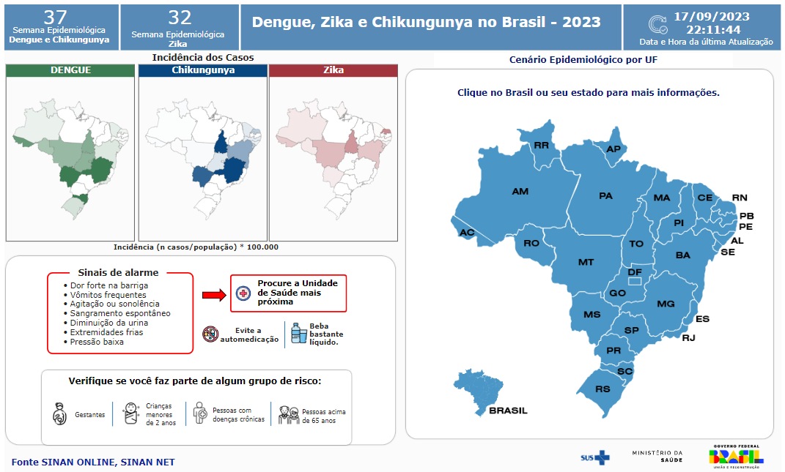

Vamos conhecer o Aedes Aegypti
Aedes Aegypti
Aedes aegypti é o nome científico de um mosquito ou pernilongo cuja característica que o diferencia dos demais mosquitos é a presença de listras brancas no tronco, cabeça e pernas.
É um mosquito doméstico, que vive dentro ou ao redor de domicílios ou de outros locais frequentados por pessoas, como estabelecimentos comerciais, escolas ou igrejas, por exemplo. Tem hábitos preferencialmente diurnos e alimenta-se de sangue humano, sobretudo ao amanhecer e ao entardecer.
Por ser um mosquito que vive perto do homem, sua presença é mais comum em áreas urbanas e a infestação é mais intensa em regiões com alta densidade populacional - principalmente, em áreas das cidades com ocupação desordenada, onde as fêmeas têm mais oportunidades para alimentação e mais criadouros para desovar.
A infestação do mosquito é sempre mais intensa em razão de água acumulada e de altas temperaturas – fatores que propiciam a eclosão de ovos do mosquito. Para evitar esta situação, é preciso adotar medidas permanentes para o controle do vetor, durante todo o ano, a partir de ações preventivas de eliminação de focos do vetor. Como o mosquito tem hábitos domésticos, essa ação depende sobretudo do empenho de toda a população.
Doenças causadas pelo Aedes Aegypti
Ele transmite a dengue, chikungunya, zika e a febre amarela urbana, doenças chamadas de arboviroses.
Como eliminar o Aedes Aegypti
Para evitar ou reduzir a transmissão da dengue, chikungunya e Zika enquanto não há tratamento ou vacina específicos, a estratégia mais efetiva para a saúde pública é o controle vetorial que se dá a partir de atividades para vigilância entomológica (monitoramento) e por diferentes métodos para controle do mosquito Aedes aegypti, vetor das doenças.
Painel de Monitoramento das Arboviroses
No site do Ministério da Saúde, você consegue acompanhar o Painel das Arboviroses atualizado.
O painel na imagem abaixo foi atualizado em 17/09/2023.
Para informações atualizadas, acesse o link logo abaixo da imagem. 
Acesse o Painel Atualizado Aqui
Informação retirada de "Ministério da Saúde"
Para acessar o conteúdo completo, clique no título, ou em Saiba Mais.
Saiba Mais
Outras Notícias
/i.s3.glbimg.com/v1/AUTH_da025474c0c44edd99332dddb09cabe8/internal_photos/bs/2023/7/5/W7iq5vTPejrKMqLDTeaA/104138751-aedes-aegypti.jpg)
01/10/2023 04h31
Dengue, zika e chikungunya
Médicos já culpam o clima por espalhar mais vírus com mosquitos. Doenças crescem em volume e diversidade, desafiando sistema de saúde e vigilância epidemiológica
Saiba Mais

28/09/2023
Dengue e Chikungunya: testes da Fiocruz revelam alto índice de coinfecção
Testes moleculares desenvolvidos por Bio-Manguinhos/Fiocruz capazes de detectar simultaneamente vários vírus, foram utilizados em uma pesquisa desenvolvida por pesquisadores do Instituto de Ciências Biológicas (ICB) da Universidade Federal de Minas Gerais (UFMG), revelando um aumento expressivo de coinfecção de dengue e Chikungunya em 11%.
Saiba Mais

06:20 22/06/2023
Ações Estratégicas de Combate à Dengue
AÇÕES DE MOBILIZAÇÃO CONTRA DENGUE E DEMAIS ARBOVIROSES NO MUNICÍPIO DE SÃO PAULO
Saiba Mais